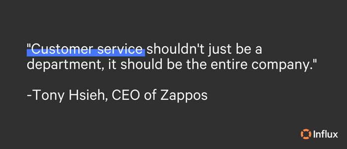

Whether your business is strictly eCommerce, brick-and-mortar, or hybrid retail, you can never stop improving customer support. Every business wants to acquire new customers, retain customers, and increase average customer spend. The best way to accomplish this is by delivering consistent, excellent customer support.
In this customer support guide, we’ve mapped out various aspects of customer support and how you can meet customer expectations again and again. To get the most value, we suggest reading through entirely and clicking in for details. However, if you’re looking for something specific, feel free to jump ahead to the section that interests you!
- What is eCommerce customer support?
- The benefits of providing good eCommerce support
- Best practices of eCommerce customer support
- ECommerce customer support automation
- Tools to improve customer support
- Personalizing customer support
- Measuring support performance and customer satisfaction
- Reduce churn with customer retention strategies
- How to scale your support team
- Outsourcing your customer support
- Invest in customer support today
**What is eCommerce customer support? **
ECommerce customer service is how online businesses provide assistance to customers with everything from making online purchase decisions to resolving issues - all while creating a seamless customer experience across channels and platforms. A good customer service team works via a variety of channels, including phone, email, live chat, and even social media.
**What are the benefits of providing good eCommerce support? **
There are many benefits of providing excellent eCommerce customer support that benefits both consumers and businesses. Peruse through the most relevant benefits associated with high-quality customer service:
- Business growth
- Increase the lifetime value of customers
- Add value to the service and improves the shop’s reputation
- Differentiate a company from its competitors
- Automate processes and cut down costs
A business will never regret investing in or focusing its energy on customer support.
Best practices for eCommerce customer support
One negative experience can forever tarnish a customer’s opinion of a business and in the worst cases, a company can lose that customer forever. Our 7 pillars of effective customer support were established to help keep customers satisfied and combat negative feelings toward a business.
- Meet customers’ needs where they are
- Delight your customers
- Integrate all customer touchpoints with a single platform and utilize automation
- Give your customers the gift of self-service
- Personalize your communication with customers
- Be fast, and free when possible
- Use customer service reviews and data to track and troubleshoot for future growth
Think about this: Have you ever returned to a business simply because of its over-the-top service? Chances are that you answered yes. The power of good customer support is not easily forgotten and positively impacts purchase decisions.
**ECommerce customer support automation **
Customer service automation is the process of automatically resolving customer queries through the means of self-service resources, messaging, and web chat functions.
- Answer common product FAQs in your live chat widget
- Self-service to help customers find their own answers
- Improve customer data management for seamless support
- Respond to order or refund/return requests with auto-reply
- Speed up support with canned responses
- Assign tickets to the right team members automatically
- Tag customer tickets based on words in the query
- Set up after-purchase automation
- Sync your customers to an email list to nurture them
Automation reduces how much time support agents need to spend on manual support tasks, reduces human errors, and can help to move things along quicker than repetitive tasks.
Tools to improve customer support
Customer support is difficult to get right. Ever-changing customer demands and complex expectations can be challenging for agents to deliver and keep promises. With a system in place that identifies and prioritizes support tickets based on immediate importance, you can organize queries into which ones need urgent attention.
Once you have ticket tags set up, you’ll want to make sure that your tone and voice are harmonized. To start, flesh out your email automation to send the right messages to customers at the right time.
From welcome emails to offering a refund, we’ve created 25+ easy-to-adjust email templates that generate trust and loyalty. These templates can also be repurposed for helpdesk macros, social media responses, or review replies to keep messages consistent across the board.
In the meantime, nurture your customers with our five tools to keep your customers supported between support emails:
- Engage and empower your community
- Implement customer satisfaction surveys
- Make it easy
- Encourage and invest in self-help
- Activate live chat
Live chat support improves CX by offering them real-time, back-and-forth conversations with agents. How to wow customers with live chat:
- Engineer custom solutions for your live chat team
- Roster your chat team for 2-minute median response times
- Over-communicate
Building effective, long-term relationships is something that takes time. With live chat, you can offer immediate solutions so that a customer doesn’t have to wait for an email response or in a phone call queue to get help.
**Personalizing customer support **
Personalization is all about tailoring CX to a person’s past interactions and leveraging user data to customize the experience. The results can benefit both consumers and businesses in several ways but it ultimately boils down to an overall better experience that is more convenient for everyone.
How to personalize customer support for better CX:
- Consider social style
- Use data responsibly and discerningly
- Segment your audience
- Offer recommendations to segmented lists
- Identify and prioritize high-value tickets
- Lean into omnichannel personalization
Omnichannel support allows businesses to achieve increased availability by providing more channels for customers to engage with them through. The personalization and efficiency of omnichannel support creates the highest level of convenience and empowers customers to interact using their preferred channel.
**Measuring support performance and customer satisfaction **
Tracking and interpreting metrics and gathering crucial feedback is essential to improving customer support. Take a deep dive into analyzing your Net Promoter Score (NPS), Customer Effort Score (CES), and of course, your Customer Satisfaction Score (CSAT) to better understand the support KPIs that really matter.
Monitoring customer satisfaction and keeping customers happy is vital. Our top seven reasons why customer satisfaction is important:
- It drives loyalty and growth
- It improves churn rate
- It helps you stand out
- It attracts new customers
- It represents your brand’s mission, values, and image
- It is cost-effective to retain customers
- It grows Customer Lifetime Value (CLV)
Improving customer satisfaction through your support doesn’t have to be complicated. We’ve mapped out five easy techniques to improve customer satisfaction!
- Segment your customers
- Be genuine
- Build credibility
- Bring value wherever possible
- Prioritize connecting with your customers
On the other hand, if your customers are upset and have complaints, don’t fret. These complaints are an opportunity for improvement if you listen and take them into consideration. Customer complaints in abundance can be detrimental to reviews. According to Qualtrics…
93% of consumers say that online reviews influence their purchase decisions.
Complaints are not something to take lightly, as they can negatively impact acquiring customers and retention. Nevertheless, we’re here to help! Check out our other piece on how to manage the most common eCommerce customer service complaints and questions. Keep reading to reduce churn with multiple customer retention strategies.
**Reduce churn with customer retention strategies **
Acquiring a new customer can cost five times more than retaining an existing customer. (Huify) Customer retention is cost-effective and measures customer loyalty over time to gauge success.
Create a customer retention strategy and grow your brand with these tips:
- Initiate a customer feedback loop
- Create a CX Critical Care Plan
- Leverage personalization
- Use experiences to elicit positive emotions
- Offer support on the right platforms
- Form a community around your product or service
- Invest in top-notch customer support
- Track and analyze churn metrics
There are many different reasons why customers churn. While an ideal churn rate is 0% and means that a business is not losing any customers, this isn’t realistic. Put energy into calculating your churn rate and reducing it with these strategies:
- Analyze why churn occurs
- Engage with your customers
- Define your customers
- Offer incentives
- Focus on customer satisfaction
- Give better service
- Consider outsourced support
Be patient! Focusing on improving customer satisfaction and reducing churn rate is a long game, but it ultimately pays off for the better.
**How to scale your support team **
Good customer support starts with hiring the right people. Throughout the hiring process, look for these four characteristics of customer service agents hired by leading brands:
- Patient
- Personable
- Proactive
- Passion

Scaling support teams is something that we’ve spent years doing! Our top five tips for building your own, highly-optimized support team:
- Go top down, not bottom up
- Set uncompromising high standards early
- Invest in your customer experience workflow early, especially your knowledge base
- Prioritize quality over speed
- Empower your team to make good decisions
Great customer support is essential for success, and it’s possible to increase customer support output without decreasing quality. Scaling your customer support without compromising service can be done in several ways, but it ultimately comes down to who your customers are and what they expect from you when they need assistance.
Once you’ve hired your new agents, it’s important to thoroughly educate and train them to know the ins and outs of your brand. From our wheelhouse, here are our 7 bits of advice for new support agents that can help you deliver exceptional support:
- Listen actively
- Practice empathy
- Develop your technical skills
- Get to know the products and services
- Speak positively
- Own your mistakes
- Be open to learning
If scaling your support team and recruiting/training new agents is something that you don’t have the resources for at the moment, consider outsourcing your customer support!
Outsourcing your customer support
There are many benefits that outsourcing customer support can offer you including reduced cost, increased efficiency, or the ability to flex and scale as needed. In our ultimate guide to outsourcing your eCommerce customer service, we’ve laid out different solutions, advantages, and things to consider.
We’ve tackled five common questions businesses have when choosing whether or not to outsource customer service. Read them here!
If you do decide to outsource, here are 5 ways to outsource effectively:
- Know what you need to outsource first
- Shortlist and compare companies providing customer service outsourcing
- Schedule trials and training
- Ensure your customer support team has the right tools
- Refine the process
You’ll want to look for an agency that retains your brand voice and values to maintain high-quality support through every customer interaction.
**Invest in customer support today **
Our team of expert support agents are trained to fit your company in as little as one week. Our goal is to provide businesses like yours with exceptional, world-class customer support, no matter how big or small. Getting started is easy, and the results speak for themselves. Invest in your customer support today!